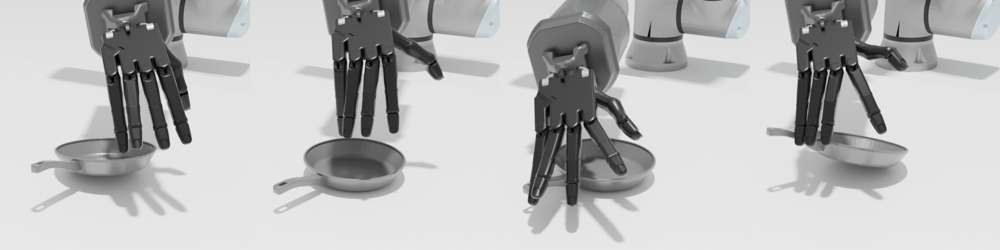

Intelligent Manipulation Behaviors

Extrinsic Dexterity Usage: Our policy leverages the table and inertia to aid in manipulating objects.

Adaptability: Although our policy may initially fail to manipulate objects, it adjusts its policy on the second attempt, successfully manipulating them.
Performance under Different Object Categories
While our method achieves a high success rate across the entire dataset, it still struggles with irregularly shaped objects, particularly thin and slender ones like knives and pens.